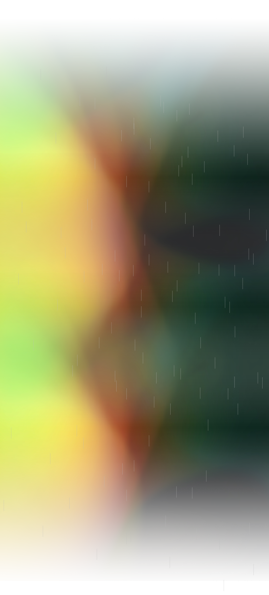

警告！即將進入金屬亂流層！
1970初
傳統重金屬
傳統重金屬是以藍調與硬搖滾(hard rock)為根基，將音樂越變越重，而逐漸發展出重金屬的雛型。其中三大元老是Led Zeppelin, Deep Purple, Black Sabbath。
" ⴼⴽⵇⵍⵣⵎⵀⵓⵙⵊ "
翻譯：
欸，你知不知道？Dio(Rainbow, Black Sabbath)是搖滾手勢發明者，他用他的高亢嗓音影響力量金屬。
" fi4wlfqfkls7)) "
翻譯：
哈哈哈這我當然懂！我還知道Judas Priest 被稱為金屬上帝，褪去藍調色彩，強化金屬力道，創造皮衣Dress Code。
1970末
NWOBHM英倫新浪潮
背景: 西方經濟衰退、青年工人階級失業與貧窮接替衰落的龐克風潮，融合龐克元素與精神壯大金屬聲勢，為80年代的多樣發展奠基。
這時的代表性樂團有：Diamond Head，成功打入主流的Iron Maiden、def leppard，以及逐漸發展出極端化的風格，影響黑金屬與死亡金屬的Venom，

1980初
鞭笞金屬
" #&*JK)#&%wfqvv "
翻譯：
這個時期可有趣了，Dress Code是爆炸長捲髮、緊牛仔褲、子彈皮帶，帥氣臉蛋。酷吧！
" ⵣⴼⵊⴽⵍⵣⴰⵃⵃ "
翻譯：
難怪你要打扮得這麼可笑。我都替你感到不好意思了。
鞭笞金屬承接新浪潮精神，再次強化曲風力道，強調節奏強烈的樂句(riff)與高速solo 與主流市場的華麗金屬相對(glam metal)，在1980後期逐漸打入主流。
三大地區各自發展出不同特色的鞭金:
舊金山灣區(四大鞭金)：Metallica, Megadeth, Slayer, Anthrax
歐洲(德三鞭): Kreator, Sodom, Destruction
南美: sepultura最為知名
當時的代表樂團有：
Metallica: 成為最商業成功的樂團
Slayer,Kreator: 殘暴風格啟蒙了死亡金屬與極限金屬
Sodom: 晦暗的音色與撒旦主題啟蒙黑金屬
" gjkl9YUEI3 "
翻譯：
據說這時候，喝酒吃藥成為了他們的興趣嗜好。
1980
力量金屬
力量金屬受Iron Maiden與Judas Priest影響，曲風融入民謠與古典元素，強調一個浪漫史詩感。特色是高亢的唱腔，與充滿技巧的吉他solo。
" gjkl9YUEI3 "
翻譯：
那這個時期有什麼樣的代表樂團呢？
" ⵣ,ⴱⵍⴻⵣⵯⵎⵇ "
翻譯：
這時候啊，美國有Manowar，歐洲則有Helloween, Gamma Ray
1980
死亡金屬
" ⵊⴼⴽⵇⵍⵣⵎⴻⴼⴳ "
翻譯：
死亡金屬起源於佛羅里達，受到Slayer等鞭金樂團影響，褪去鞭金的帥氣元素，專走粗殘血腥路線
" uieVKNKOwVS3 "
翻譯：
天啊！聽起來好可怕喔...
代表樂團:
美國: death, morbid saint
斯堪地那維亞亦發展出自己的死金圈，並逐漸發展出旋律死亡金屬風格
1980末
黑金屬
黑金屬發源於北歐地區，主要受到Venom影響，以反基督為中心思想。
" ⴼⵊⵣⵎⵖ,ⵡ;ⴻⵉ "
翻譯：
此時期的Dress Code是離子燙黑長直，屍妝，全身黑漆漆(要把袖子剪掉)。
" 289gjweklgg2 "
翻譯：
可怕的是，他們會燒教堂以及殺人...
1990
Nu-Metal新金屬
在90年代另類搖滾風潮後，融合饒舌、DJ、Grunge等新元素進入因為太主流，不為許多老派金屬樂迷認可
00- Present
當代金屬樂
金屬樂發展進入恆定期，因為線上音樂的迅速傳播，各種樂風都有相對穩定的客群與愛好者。有些樂團主張復興老派的風格，有些樂團則致力於融入新元素或曲風的結合。
" ru2kjdgalg "
翻譯：
像是老派鞭金，就有Evile做代表。
" ⴰⵢⴼⵊⴽⵣⴳ "
翻譯：
而畸胎樂風，則有Vektor。